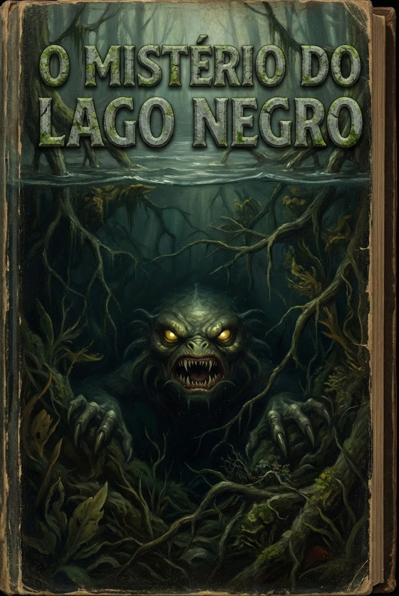
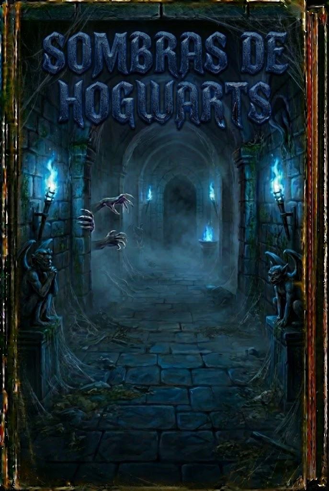
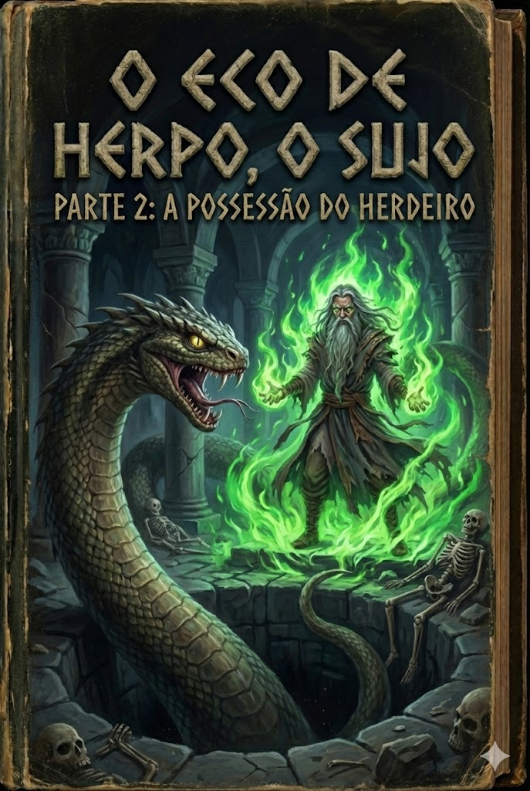

Sua Coleção de Relíquias

O Mistério do Lago Negro
Pronto para Ler
Enigmas da Biblioteca Proibida
Pronto para Ler
O Fantasma de Azkaban
Pronto para Ler

Sombras de Hogwarts
Pronto para Ler
Herpo, o Sujo – Parte 1
Em breve...
